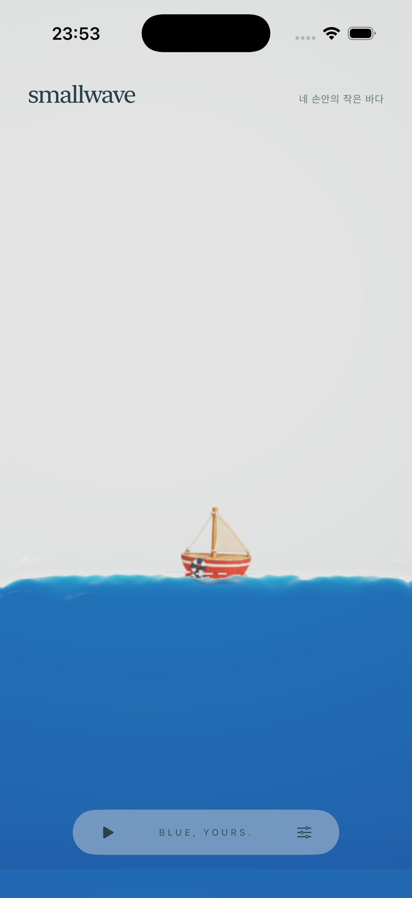

<!doctype html>
<html lang="ko">
<meta charset="utf-8">
<meta name="viewport" content="width=device-width,initial-scale=1">
<title>smallwave — 빨간 배의 수면 접촉</title>
<style>
*{box-sizing:border-box}body{margin:0;background:#f5f2eb;color:#294247;font:14px/1.7 -apple-system,BlinkMacSystemFont,"Apple SD Gothic Neo",sans-serif}main{max-width:820px;margin:auto;padding:24px;display:grid;grid-template-columns:300px 402px;gap:46px;align-items:start}aside{padding-top:28px}h1{font:400 30px/1.4 Georgia,"AppleMyungjo",serif;letter-spacing:-.8px;margin:16px 0}p{margin:12px 0}.eyebrow{font-size:10px;letter-spacing:.14em;color:#647574}.muted{color:#647574;font-size:12px}.switches{display:flex;gap:8px;flex-wrap:wrap;margin:24px 0}button{font:inherit;color:inherit;background:transparent;border:1px solid #adbab2;border-radius:7px;min-height:44px;padding:9px 13px;cursor:pointer}button[aria-pressed="true"]{background:#294247;color:#fff;border-color:#294247}button:disabled{opacity:.4;cursor:default}button:focus-visible,a:focus-visible,summary:focus-visible{outline:3px solid #a97132;outline-offset:3px}.poses{display:flex;gap:6px;flex-wrap:wrap}.poses button{font-size:12px;padding:8px 10px}figure{margin:0;width:402px;max-width:100%}.phone{width:100%;aspect-ratio:402/874;position:relative;overflow:hidden;border-radius:30px;background:#e1e3e2;box-shadow:0 0 0 1px #c9d0cb}.phone img,.phone video{display:block;width:100%;height:100%;object-fit:contain}.phone [hidden]{display:none}.caption{font-size:11px;color:#647574;margin:10px 0}details{margin-top:24px;border-top:1px solid #d5dcd3;padding-top:8px;font-size:12px;color:#526966}summary{cursor:pointer;padding:10px 0}a{color:inherit}.source{font-size:11px;margin-top:20px}.source a{margin-right:12px}
@media(max-width:780px){main{display:flex;flex-direction:column;align-items:center;gap:22px;padding:20px 0}aside{padding:0 24px;width:min(100%,450px)}h1{font-size:26px}.switches{margin:18px 0}figure{max-width:100vw}.phone{border-radius:0}.caption{padding:0 12px}}
</style>
<main>
<aside><div class="eyebrow">SMALLWAVE / SAILBOAT / 03</div><h1>빨간 배,<br>물에 닿는 작은 자리</h1><p>작고 통통한 배의 모양과 빨강은 그대로. 회색 받침처럼 보이던 선체 아래를 물빛에 스며들게 다듬었어.</p><p class="muted">가는 접촉 그림자와 작은 물가장자리, 조금 더 또렷한 돛과 구명환. 배의 크기와 움직임은 같아.</p>
<div class="switches" aria-label="전체 화면으로 전후 비교"><button data-version="primary" aria-pressed="true">다듬은 모습</button><button data-version="before" aria-pressed="false">이전 모습</button></div>
<p class="muted">402 × 874pt 전체 화면. 휴대폰에서는 화면 폭에 맞춰 보여줘.</p>
<details><summary>기울임과 움직임 점검</summary><p>선택하면 오른쪽 비교 자료가 바뀌어. 자세별 장면은 같은 물리 상태의 Metal 렌더야.</p><div class="poses" aria-label="비교할 장면"><button data-pose="native" aria-pressed="true">앱 전체 화면</button><button data-pose="rest" aria-pressed="false">잔잔할 때</button><button data-pose="tilt" aria-pressed="false">기울일 때</button><button data-pose="shake" aria-pressed="false">흔들 때</button><button data-pose="inverted" aria-pressed="false">뒤집었을 때</button><button data-pose="flat" aria-pressed="false">눕혔을 때</button><button data-pose="motion" aria-pressed="false">6초 움직임</button></div></details>
<details><summary>확인한 범위</summary><p>첫 화면은 실제 SwiftUI 앱을 실행한 iPhone 17 Pro 시뮬레이터 캡처야. 전후 캡처 시점은 달라. 자세별 비교에서는 같은 시뮬레이션 상태를 사용했어.</p><p>이 아트 수정은 배의 합성에만 적용했어. 기준 빌드의 물리·파동·자이로·UI 소스, 이미지, 빨강, 배 크기를 유지했어. 눕힌 자세에서는 나무가 과하게 비치지 않도록 원래 선체 불투명도를 유지해.</p><p>현재 배는 한 장의 입체감 있는 이미지이므로, 폰을 눕혀도 새로운 옆면이 생기는 3D 모형은 아니야. 이 비교는 해당 표현 방식 안에서의 개선이야.</p></details>
<p class="source"><a href="README.md">변경·검증 기록</a><a href="verification.json">같은 물리 상태 확인</a></p>
</aside>
<figure><div class="phone"><video id="motion" src="primary-motion.mp4" controls playsinline muted loop preload="metadata" hidden aria-label="같은 물리 시스템에서 움직이는 빨간 배, 6초"></video></div><figcaption class="caption" id="caption" role="status">다듬은 모습 · 실제 앱 전체 화면 · iOS 시뮬레이터</figcaption></figure>
</main>
<script>
let version='primary',pose='native';const names={primary:'다듬은 모습',before:'이전 모습',native:'앱 전체 화면',rest:'잔잔할 때',tilt:'기울일 때',shake:'흔들 때',inverted:'뒤집었을 때',flat:'눕혔을 때',motion:'6초 움직임'};
function show(){const movie=pose==='motion';const scene=document.querySelector('#scene'),video=document.querySelector('#motion');scene.hidden=movie;video.hidden=!movie;if(!movie){video.pause();scene.src=`${version}-${pose}.png`;}document.querySelector('[data-version="before"]').disabled=movie;document.querySelector('#caption').textContent=movie?'다듬은 모습 · 6초 · 기존 물리와 기울임 입력':`${names[version]} · ${names[pose]} · ${pose==='native'?'iOS 시뮬레이터 캡처':'같은 물리 상태 · Metal 장면'}`;}
document.querySelectorAll('[data-version]').forEach(button=>button.addEventListener('click',()=>{version=button.dataset.version;document.querySelectorAll('[data-version]').forEach(b=>b.setAttribute('aria-pressed',String(b===button)));show();}));
document.querySelectorAll('[data-pose]').forEach(button=>button.addEventListener('click',()=>{pose=button.dataset.pose;if(pose==='motion'){version='primary';document.querySelectorAll('[data-version]').forEach(b=>b.setAttribute('aria-pressed',String(b.dataset.version===version)));}document.querySelectorAll('[data-pose]').forEach(b=>b.setAttribute('aria-pressed',String(b===button)));show();}));
</script>
</html>
